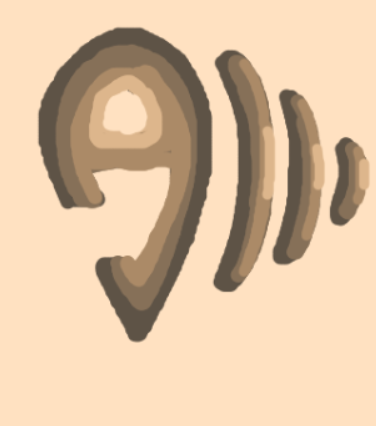

Structuration des données
Tout commence par un tableur : j'ai construit un fichier .CSV depuis Excel pour organiser chaque documentaire sonore (ville, année, thème, coordonnées, fichier audio) afin de pouvoir l'intégrer directement dans Leaflet.js.

Wireframe de l'expérience
Avant d'écrire une ligne de code, ce logo combine un repère de localisation (ouvert à la base pour former la lettre « A » comme Audio) avec trois ondes représentant le son, des courbes de niveau topographiques et la lettre « M ». Validé dans un premier temps pour sa structure lors des premières esquisses, le concept a ensuite été développé dans une palette de couleurs plus vive et plus dynamique, suite aux retours du client. J'ai esquissé la navigation : une vue carte, un catalogue audio, des filtres par ville/année/thème et un lecteur, le tout relié dès le départ.



Le résultat, en direct
Le site est en cours de développement, mais déjà en ligne et utilisé par de vrais étudiants aujourd'hui. Parcourez-le directement ci-dessous, sans avoir besoin d'ouvrir un nouvel onglet.